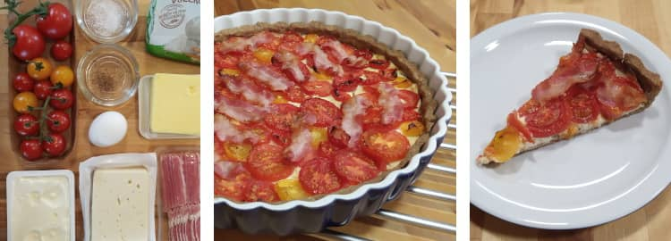

@charak
@charakHerzhafte Tomatentarte
Im Spätsommer esse ich gerne diesen süß-würzigen Kuchen. Für den Belag verwende ich mehrere Tomatensorten, vor allem verschiedene Farben sehen recht hübsch aus. Die Zutatenmenge reicht für eine Tarte mit 28 Zentimeter Durchmesser, die man sowohl ofenwarm als auch kalt essen kann.

Zutaten
Salz
100 g Butter
1 Ei (mittelgroß)
150 g Gorgonzola/Schafskäse
200 g Doppelrahmfrischkäse
600 g Tomaten
schwarzer Pfeffer
5 Scheiben Frühstücksspeck
Oregano (oder Basilikum, zum Garnieren)
Zubereitung
Mehr, 1½Teelöffel Salz, Butter (zerkleinert), das Ei und falls nötig 1–2 Esslöffel Wasser mit den Knethaken zu einem glatten Teig rühren. Als Kugel in Frischhaltefolie für 30 Minuten in den Kühlschrank legen.
Währenddessen in einer Schüssel den Gorgonzola (oder Schafskäse) mit der Gabel fein zerdrücken und mit dem Frischkäse verrühren. Mit Pfeffer abschmecken. Nun die Tomaten in Scheiben schneiden.
Backofen auf 175 °C Umluft vorheizen. Den Teig ausrollen und in eine flache Tarteform legen. Die Gorgonzola-Creme auf dem Teigboden verstreichen und die Tomatenscheiben schuppenartig darauf legen. Salzen und pfeffern.
Im Backofen auf unterer Schiene 25–35 Minuten backen. Dann die Schinkenscheiben ohne Überlappung auf dem Kuchen verteilen und noch 5 Minuten weiterbacken. Vor dem Servieren mit Oregano oder Basilikum dekorieren (vergesse ich immer).
---
Rubrik(en): #methodik